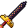
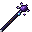
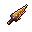

Legendary Weapons
The 25 class-locked Legendary weapons, five per class - their stats, where they come from and how the class lock works.
What they are
Legendary weapons are 25 hand-made weapons, five for each class. Each one is a Legendary-rarity unique with high fixed damage and three big stat bonuses, about twice what a signature weapon gives. They have no special powers. Their strength is in their numbers. Every one has its own animated look.



Don't confuse them with ordinary Legendary-rarity rolled gear (orange names with random words). These are the named weapons listed below.
Class-locked
Only its own class can wield a Legendary weapon. The tooltip says so: ✦ Legendary · only a Mage can wield it.
In the hands of any other class it does nothing: no damage, no stats, no casting. A chat line tells you, for example, "Aeonspire answers only to a Mage. In your hands it deals no damage and casts nothing." Change class and it is checked again at once.
Like all gear, a Legendary weapon also has an item level and only works from that character level up (see gear).
Where they come from
They never come from the ordinary loot tables. A Legendary weapon is always one of the receiver's class's five. A character with no class can't get one.
| Source | Chance |
|---|---|
| A Rare monster | 1 in 1,000 |
| A Champion | 1 in 200 |
| Some of the great bosses | 1 in 40 |
When you find one, only you are told: "✦ You found a Legendary weapon: Kingsbane", with a big title on screen.
The 25
Damage and speed are the values at item level 25. The weapon you get follows its own item level: lower below 25, higher above. Bows have no melee damage. Like every bow, they get Draw Power (+% arrow damage) for their item level and rarity.
Warrior
| Weapon | Type | Damage / speed | Bonuses | Look |
|---|---|---|---|---|
| Kingsbane | Sword | 12 / 1.2 | +7 Might, +6 Toughness, +4 Vitality | Black steel under a golden crown. |
| Worldsplitter | Axe | 14 / 0.8 | +7 Might, +5 Fortitude, +5 Vitality | Obsidian with fire still moving inside. |
| Thunderhowl | Mace | 13 / 0.85 | +6 Might, +6 Steadfast, +5 Toughness | It hums before it lands. |
| The Iron Vow | Sword | 10 / 1.5 | +7 Fortitude, +6 Vitality, +4 Steadfast | White steel and gold wings. |
| Rimefang | Sword | 11 / 1.35 | +7 Toughness, +6 Vitality, +4 Might | A blade of ice that does not melt. |
Mage
| Weapon | Type | Damage / speed | Bonuses | Look |
|---|---|---|---|---|
| Aeonspire | Staff | 4 | +8 Arcana, +5 Vitality, +4 Precision | A night sky held on a rod. |
| The Burning Treatise | Staff | 4 | +8 Arcana, +5 Might, +4 Fortitude | A sceptre crowned in fire. |
| Voidglass Requiem | Mage Blade | 7 / 1.7 | +7 Arcana, +5 Precision, +4 Swiftness | A blade of black-violet glass. |
| Moonwrit | Mage Blade | 7 / 1.75 | +7 Arcana, +5 Vitality, +4 Steadfast | A curved blade the colour of moonlight. |
| Verdant Heart | Staff | 4 | +7 Arcana, +6 Vitality, +4 Fortune | A staff that is still alive. |
Rogue
| Weapon | Type | Damage / speed | Bonuses | Look |
|---|---|---|---|---|
| Nightsong | Dagger | 7 / 2.4 | +7 Ferocity, +6 Swiftness, +4 Precision | A wavy blade with stars in the steel. |
| Widowmaker | Dagger | 7 / 2.4 | +7 Ferocity, +6 Precision, +4 Fortune | A hooked fang that never stops dripping. |
| The Ninefold Fang | Dagger | 8 / 2.3 | +7 Precision, +5 Ferocity, +5 Swiftness | Two bone blades, bound in gold. |
| Ashwhisper | Dagger | 7 / 2.4 | +7 Swiftness, +5 Ferocity, +5 Fortune | Grey ash with a burning edge. |
| Gilded Debt | Dagger | 6 / 2.6 | +8 Fortune, +5 Precision, +4 Swiftness | A golden needle with a coin on a chain. |
Archer
| Weapon | Type | Bonuses | Look |
|---|---|---|---|
| Skyrender | Bow | +8 Precision, +5 Swiftness, +4 Ferocity | A storm caught between two horns. |
| Sunshot | Bow | +7 Precision, +6 Ferocity, +4 Vitality | A golden recurve that is warm to touch. |
| The Long Patience | Bow | +7 Precision, +5 Steadfast, +5 Fortitude | Ancient yew with moss in its joints. |
| Wyrmstring | Bow | +7 Precision, +5 Ferocity, +5 Swiftness | Red scale and bone, strung with fire. |
| Whisperwind | Bow | +7 Swiftness, +6 Precision, +4 Fortune | Pale wood that weighs nothing. |
Herald
| Weapon | Type | Damage | Bonuses | Look |
|---|---|---|---|---|
| Banner of a Hundred Fires | Standard | 4 | +7 Arcana, +6 Vitality, +4 Fortune | Crimson cloth on a golden glaive. |
| Choir Eternal | Standard | 4 | +8 Vitality, +5 Arcana, +4 Steadfast | A sun on a silver pole, and a long white banner. |
| The Unbowed | Standard | 4 | +6 Fortitude, +6 Vitality, +5 Arcana | Black iron and a teal banner that never falls. |
| Lantern of Lost Roads | Standard | 4 | +7 Arcana, +6 Fortune, +4 Vitality | A blue lantern that shows the way home. |
| The Ashen Oriflamme | Standard | 4 | +6 Arcana, +6 Vitality, +5 Fortune | A long scarlet banner on a burning spear. |
See also
Extraordinary and God's Tool weapons · Weapons · Rarity · Classes